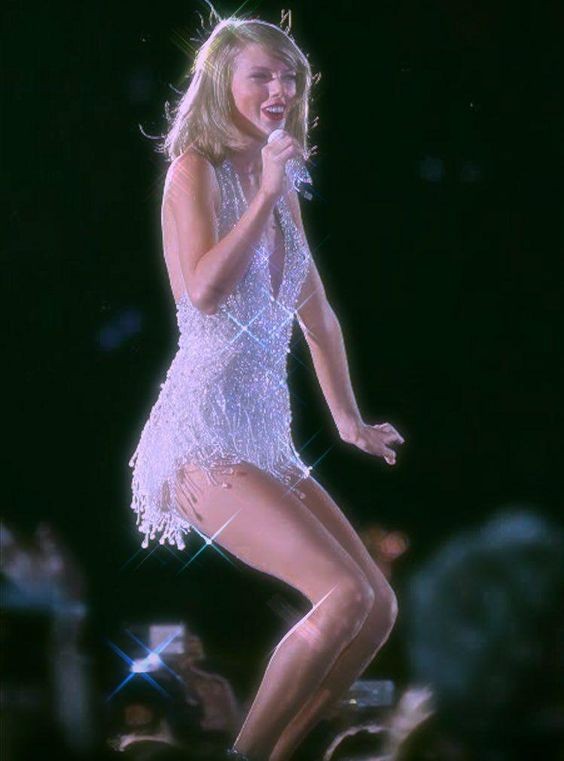

Big Machine Records
Taylor Swift before 2019
October 24, 2006, Taylor Swift's debut album, Taylor Swift, was released by Big Machine Records in both Canada and the United States. Under Big Machine Records, Taylor Swift recorded six studio albums before leaving them in 2019 after a change of owners. Scooter Braun was supplied the money to purchase and own all the rights to Taylor Swift's records causing one of the biggest controversy's Swift has ever been in. Despite her efforts to purchase the masters to her first six studio albums, she claimed that Big Machine had not offered her favorable conditions during the negotiations. As of November 2020, Taylor's contract with Big Machine Records allowed her to go back in and rerecord her albums. The albums owned by her are marked with "(Taylor's Version)".
- Taylor Swift (2006)
- Fearless (2008)
- Speak Now (2010)
- Red (2012)
- 1989 (2014)
- Reputation (2017)
Taylor's tours
Within this time spent under Big Machine Records, she went on to perform five tours, one for each album excluding Taylor Swift. All five of these tours consisted of both national and international locations. With these tours she has continually broken records with The Red Tour (2013-2014), supporting her album Red, becoming the highed-grossing country tour once it completed with over $150 million grossed. The 1989 World Tour (2015), based on her album 1989, spanning across 85 dates in 12 countries with the highest-grossing tour of 2015 with $250 million. Just the North American shows themselves grossed $199.4 million, surpassing the Rolling Stons' record from 2005. Taylor Swift then went on to break her own set record through the 2018 Reputation Stadium Tour where its North American leg grossed $202.3 million, setting the record for the highest-grossing North American tour ever.